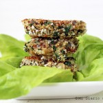

Croquetas de quinua
Ingredientes
- 1 taza de quinoa cocida
- 1/2 unidad de cebolla picada en cuadros
- 1 cucharada de aceite
- 1 diente de ajo picado fino
- sal y pimienta a gusto
- 1 taza de espinacas crudas picadas
- 2 cucharadas de almendras picadas o laminadas
- 1 huevo
- 1/2 taza de pan rallado o panko
Preparacion
- Es importante que antes de cocinar la quinoa, deben lavarla bien bajo el chorro de agua helada.
- Luego cocinar por 15 minutos poner una taza de quinoa y dos tazas de agua hervida, tapar la olla, cocinar a fuego medio bajo.
- Mientras tanto en un sartén sofreír la cebolla por unos 2 minutos, luego agregar el ajo picado. Sazonar con sal y pimienta. Cocinar por unos 2 minutos más.
- Agregar la espinaca picada y cocinar por un minuto.
- Luego en un bol batir un huevo, agregar la quinoa cocida, y la mezcla de cebolla y espinacas
- Añadir las almendras y media taza de pan rallado o panko
- Mezclar todo muy bien y formar las croquetas, las cuales deben pasar nuevamente por pan rallado o panko sazonado con sal.